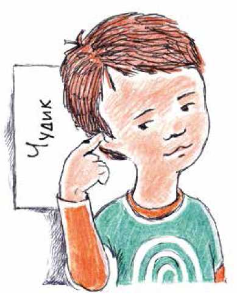
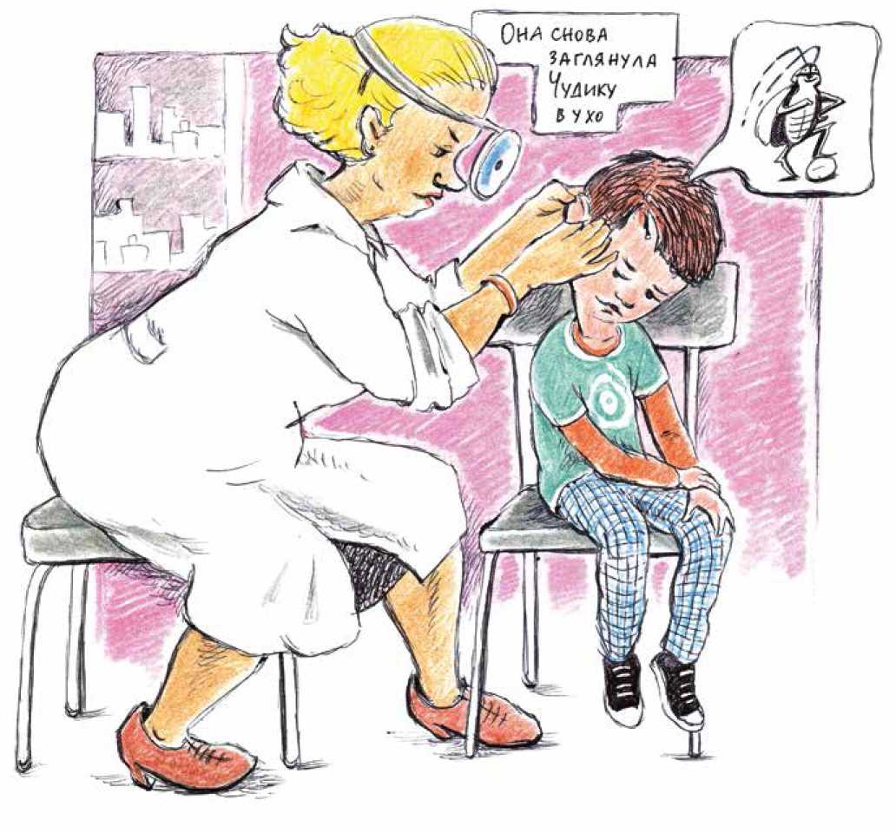
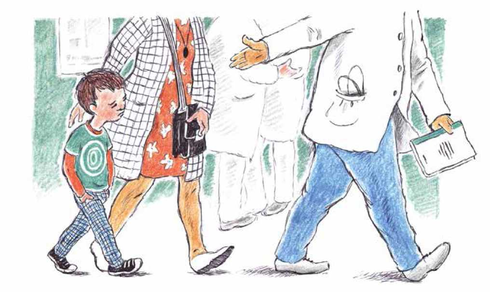
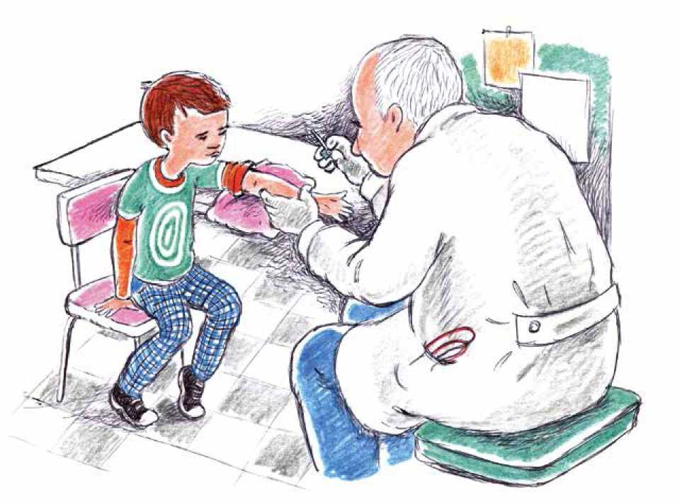
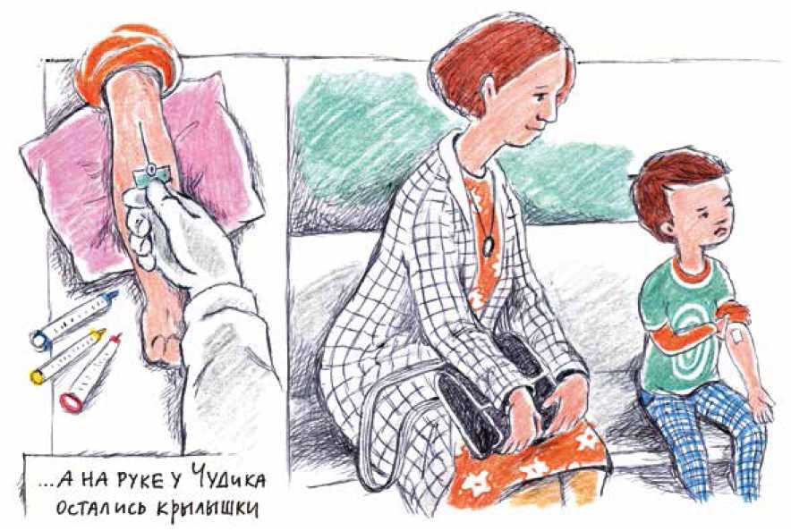

В одной далекой стране, в Старом городе, жил да был Чудик. Чудик как Чудик: руки, ноги, голова, кашу не любит, умеет считать и рисовать кораблики, знает наизусть стихотворение про зиму.
Чудиком прозвала его мама, и все уже забыли, почему. Видимо, потому, что все казалось ему живым и чудесным. Наверное, когда он спросил у мамы, чем разговаривают деревья, или не забывают ли часы показывать время, когда все спят, мама и придумала такое имя.
И вот однажды вечером у Чудика заболело правое ухо.
Сначала мама погладила Чудика, и все прошло.
Но на следующее утро ухо опять заболело. Вдобавок, там все время что-то щелкало. Чудик мотал головой и сердился, но оно все равно щелкало.
Мама посмотрела, как Чудик ковыряет в ухе, и повела его в поликлинику.
В поликлинике очень много докторов. Целый список висит на стенке. Мама даже сначала растерялась, а потом нашла в списке доктора с удивительным названием «ЛОР». Этот доктор умеет заглядывать в уши (а если надо, еще и в нос, и в горло).
Кабинет ЛОР-врача был на третьем этаже. Вместе с мамой Чудик прочитал, что врача зовут Мария Семеновна. Перед кабинетом сидела другая мама с малышом, у которого ухо было замотано толстым шарфом. Чудик подумал, что и ему замотают ухо, и он ничего не будет слышать, и расстроился.
Малыша позвали к врачу. Что происходило там за дверью, Чудик не разобрал. Ему все время мешало, что в ухе щелкает.
Малыш вышел из кабинета без шарфа. Из кабинета закричали: «Следующий!» Следующим был Чудик, и они с мамой вошли в кабинет. Мария Семеновна сидела за столом, перед ней стояла яркая лампа, а на лбу у нее было зеркало с дырочкой.
Мама рассказала доктору, что случилось с Чудиком. Мария Семеновна улыбнулась и вдруг опустила зеркало так, что оно закрыло ей один глаз. Она заглянул Чудику в горло, в нос и в оба уха. Потом выписала рецепт на капли и велела придти через три дня.
Капли не очень помогли. Ухо немножко болело и совсем перестало слышать. Только продолжало щелкать. Как будто там завелся жучок.
Через три дня прямо с утра они снова пошли к Марии Семеновне. Она снова заглянула Чудику в ухо и вдруг стала очень серьезной. Она подарила Чудику деревянную палочку, с которой смотрят горло, долго разговаривала с мамой и звонила по телефону.
- Что она сказала? Есть у меня жучок в ухе? – спросил Чудик, когда они вышли из кабинета.
- Сказала, что надо показать твое ухо другому доктору. Он работает в больнице.
- Я что, буду лежать в больнице? – испугался Чудик.
- Да нет, наверное, тебе там опять заглянут в уши, а потом мы пойдем домой. Я точно не знаю. Может быть, сделают какие-нибудь анализы, или еще что-нибудь. Там посмотрим.
На следующий день мама повезла Чудика в больницу.
Чудик не знал, большой он, или еще маленький. Когда доставал до выключателя – вроде, уже и большой. А когда за мамой не успевал, если она быстро шла, – маленький.
Но сейчас это Чудика не интересовало. Они сидели с мамой на скамейке в коридоре больницы, и было очень скучно, потому что мама забыла Чудикову книжку с картинками в Попыхах (это такое место где-то дома, куда кладут то, что нужно взять с собой). В ухе сегодня не очень щелкало. Наверное, жучок уснул.
Мама сказала, что где-то тут их кто-то ждет. Один доктор спросил у мамы что-то и опять ушел, и вот сейчас уже пятый раз проходил мимо.
Раньше мама водила Чудика в какие-то нормальные места – в магазин там, или в гости. А теперь вот они пришли сюда, и мама говорит, что она не знает, что они тут будут делать.
- Мама, пойдем домой! – сказал Чудик.
- Нельзя. Нас еще не отпустили.
Чудик удивился и на всякий случай обошел маму со всех сторон. Но ее никто не держал.
- Мы же пришли, чтобы доктор посмотрел тебе в ухо. Вот и будем ждать, – объяснила мама.
 Потом доктор позвал их за собой. Мама взяла Чудика за руку, и они пошли за доктором.
- Мы куда? – спросил Чудик. Он испугался.
- Не знаю, – ответила мама.
Доктор привел их в большую комнату с яркими лампами. Он сел за большой стол и попросил, чтобы Чудик дал ему руку.
Э, нет! Кажется, сейчас его будут колоть иголкой! Один раз, уже давно, так уже было. И мама, как всегда, заодно с ними!
- Мама! Я не хочу. Мне будет больно!
Дальше начнется (Чудик помнил) – нет, совсем не больно, не плачь, дай только ручку… Но доктор сказал:
- Ну да, будет немножко больно. Если хочешь, можешь даже кричать и ругаться. Но только постарайся не двигать рукой.
- Я буду кричать!
Доктор не возражал.
Мама тоже считала, что доктор прав. Чудик даже на нее рассердился.
Доктор тем временем приготовил два шприца с какой-то прозрачной жидкостью, салфетки и странную иголку с крылышками.
- Если боишься, то не смотри, – сказал доктор.
Ну как это – не смотреть! Он там будет что-то делать, а Чудик не увидит!
Сначала доктор закрепил на руке у Чудика ремешок, который сжимался и растягивался. Такой ремешок называется жгут. Доктор туго затянул жгут, и у Чудика на руке стали хорошо видны синеватые трубочки – вены. Доктор долго присматривался, наконец протер кожу над одной веной ваткой со спиртом и взял в руки иголку.
Конечно, было немножко больно. Но оказалось, что даже кричать не обязательно. Тем более что доктор делал какие-то удивительные вещи: он ввел иголку глубоко, а потом вдруг потянул за нее и вытащил, а на руке у Чудика остались крылышки. Доктор надавил на руку около крылышек пальцем.
- Видишь, я иголку убираю, а в руке у тебя остается трубочка с крылышками – доктор приклеил крылышки пластырем. - Эта трубочка называется «катетер». Он тебе сегодня еще пригодится.
Потом доктор взял прозрачные пластмассовые пробирки с разноцветными крышками, открыл крышку у одной из них – и как только ухитрился одной рукой! – подставил под трубочку, и кровь потекла прямо в пробирку. Так он набрал несколько пробирок.
После этого доктор ввел прозрачную жидкость из шприцов прямо в вену. Чудик почувствовал, как по руке бежит холодок.
- Это чтобы кровь в катетере не свернулась – объяснил он.
Потом он закрыл трубочку колпачком и забинтовал Чудику руку.
- Ты пока походишь с катетером, а попозже мы его уберем. А ты молодец, не плакал! Теперь подожди немножко в коридоре.
Доктор же не знал, что Чудик не плакал просто потому, что очень сердился, а еще и потому, что было интересно. В коридоре он вспомнил, что на самом деле обиделся на маму; он сел на скамейку и целых сорок три секунды с ней не разговаривал.